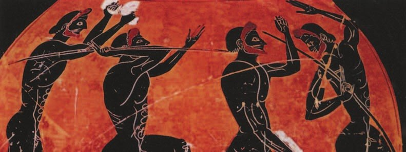
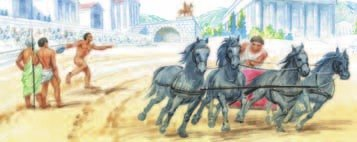
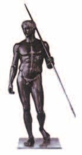
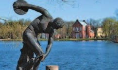

Олимпийские игры
Греки считали: боги подарили человеку прекрасное тело, и держать его в силе и красоте — святая обязанность. Поэтому спорт был для них почти священным делом.
Главные состязания — Олимпийские игры. Это был праздник для всех греков — и спортивный, и религиозный. Их проводили в честь Зевса в городе , в области Элида.
По преданию, первые игры прошли в 776 году до н. э. Потом — раз в четыре года. Как чемпионат мира по футболу: последний был летом 2026 года, следующий — через четыре года.
Гонцы объявляли всем, когда будут игры. И на это время по всей Элладе прекращались войны — наступал .
В Олимпию спешили спортсмены и зрители со всего Средиземноморья. Приезжали и философы и поэты: вели учёные беседы и читали свои новые произведения.
Греки относились к спорту как к священному действию, поскольку считали, что боги даровали человеку прекрасное тело и содержать его в красоте, силе и гармонии — святая обязанность. Выполняли эту обязанность с помощью спортивных состязаний. Главными среди них были Олимпийские игры — общегреческий спортивный и религиозный праздник. Олимпийские игры проводили в честь верховного бога Зевса в городе Олимпия в области Элида.
По преданию, первые Олимпийские игры состоялись в 776 году до н. э., затем проводились один раз в четыре года. Гонцы оповещали население о времени состязаний. На этот период прекращались войны и устанавливался священный мир во всей Элладе. В Олимпию спешили участники игр и многочисленные зрители со всех уголков Средиземноморья. Сюда приезжали философы и поэты. Они проводили научные беседы, читали свои новые произведения.

- Почему Олимпийские игры получили такое название?
1. Греки считали, что держать тело в силе — святая обязанность. Где ещё это видно в их жизни? Вспомни §31.
2. Олимпийские игры — и спортивный, и религиозный праздник. Найди в трёх разделах три доказательства, что игры были служением Зевсу.
Участники и программа соревнований
Состязаться могли только полноправные граждане — мужчины. Выступали без одежды, кроме гонок на колесницах. Женщин даже не пускали смотреть — вас с мамой на трибуну бы не пустили.
В первый день приносили торжественные жертвы Зевсу. Потом начинались состязания.
Главные виды — бег на короткую и длинную дистанцию, метание копья и диска, прыжки, борьба и кулачный бой. Короткий бег был на один стадий — около 190 метров, почти половина твоей дороги до «Пятёрочки». От слова «стадий» — наш «стадион».
Прыгали с каменными или металлическими гантелями в руках — и под музыку. У тебя на физкультуре тоже есть прыжки, только без гантелей.
На мчались колесницы. Ты уже ездила верхом — а тут колесница с четвёркой коней! Богатый владелец коней часто нанимал возницу. Возница мог и выиграть гонку — но всё равно признавали владельца коней и колесницы.
Твой одноклассник гоняет на картинге — там побеждает тот, кто за рулём. А в Олимпии — тот, чьи кони.
В состязаниях принимали участие только полноправные граждане. Они выступали обнажёнными (за исключением скачек на колесницах). Женщинам запрещалось присутствовать на выступлениях.
В первый день проводились торжественные жертвоприношения богу Зевсу. Затем начинались состязания. Главными видами спорта считались бег на короткую и длинную дистанции, метание копья и диска, прыжки, борьба, кулачный бой. На ипподроме проходили гонки на колесницах. Их участниками были не только богатые люди — владельцы лошадей и колесницы. Иногда они нанимали колесничего, который мог участвовать в соревновании вместо них и даже мог выиграть соревнования, но победителем (олимпиоником) всегда признавался владелец лошадей и колесницы.
- Какие спортивные состязания проводились на Олимпийских играх?
3. Сравни пять упражнений палестры из §31 с программой Олимпийских игр. Что совпадает?
4. В гонках колесниц награду получал владелец коней, а не возница. Кого так же награждали в театре (§33)?

Награждение победителей
Победителя Олимпийских игр награждали оливковым венком. Дома, в родном полисе, его победу считали успехом всего города: ему оказывали почести и давали особые права. Поэты сочиняли о нём стихи, а в Олимпии и дома ставили его статую.
Победителей считали не просто сильными и ловкими. Их почитали как любимцев Зевса — ведь игры устраивали для него.
Таких атлетов и изображали скульпторы. «Дорифор» — «Копьеносец» — работа (ты помнишь его имя по §30). А «Дискобол» — работа : атлет в миг самого сильного напряжения, перед броском диска.
Копия «Дискобола» стоит в Царском Селе, в городе Пушкине под Петербургом, — та, что на фотографии. Будешь в Петербурге — найди её.
Игры шли больше тысячи лет. В 393 году н. э. их запретил римский император. А в 1896 году их возродил француз — и с тех пор Олимпиады снова проходят раз в четыре года.
На Олимпийских играх победителей награждали оливковым венком. В родном городе победу на всегреческих играх воспринимали как успех всего полиса. Победителю оказывали всяческие почести и предоставляли различные привилегии. В его честь поэты слагали стихи, а в Олимпии и в родном полисе воздвигали скульптурное изображение.
Победителей Олимпийских игр считали не просто сильными и ловкими людьми, их почитали как любимцев Зевса, поскольку игры были служением Зевсу и устраивались для него.

- Какая награда ожидала победителя Олимпийских игр?
5. Сравни награду олимпионика и награду в театре (§33). Что похоже и что разное?
6. Почему победа одного атлета была успехом всего полиса? Вспомни, как Перикл гордился Афинами (§29).
Подведём итоги
- Какие виды спортивных состязаний Олимпийских игр сохранились в наши дни?
- В честь кого устраивали Олимпийские игры?
- Какую роль играли Олимпийские игры в политической жизни Древней Греции?
- Подумай, какое значение имела победа атлета в играх для его полиса.
Прочитай текст и ответь на вопрос.
Для увеличения длины прыжка пользовались гантелями из камня или металла. В момент прыжка руки с гантелями выбрасывались вперёд. Прыжки сопровождались музыкой. Она помогала участникам состязаний соблюдать ритм. Музыка вообще была обязательна для соревнований.
Победителем считался не наездник, а владелец лошадей. Специальная комиссия следила за тем, чтобы все правила игр соблюдались. Запрещалось спорить с судьями или подкупать их, за это наказывали плетью.
Сформулируй ответ на главный вопрос параграфа — что значили Олимпийские игры для древних греков? Приведи два-три довода.
Проверь себя
Нажимай по очереди — от самого древнего к самому близкому к нам. Осторожно с нулём!
1. В честь кого проводили Олимпийские игры?
2. Как часто проходили Олимпийские игры?
3. Что происходило в Элладе на время игр?
4. Кто мог участвовать в состязаниях?
5. Кого признавали победителем гонки колесниц?
6. Кто возродил Олимпийские игры в 1896 году?
Расскажи вслух
Олимпийские игры
- Спорт для греков — святая обязанность: беречь тело, подаренное богами.
- Игры в честь Зевса в Олимпии; первые — в 776 году до н. э., потом раз в четыре года.
- Священный мир по всей Элладе; приезжали спортсмены, зрители, философы и поэты.
Участники и программа
- Только граждане-мужчины; женщин не пускали даже смотреть.
- Первый день — жертвы Зевсу; бег, метание диска и копья, прыжки, борьба, кулачный бой.
- Колесницы на ипподроме: победитель — владелец коней, а не возница.
Награда победителю
- Оливковый венок; победа — успех всего полиса.
- Почести, стихи, статуи; олимпионик — любимец Зевса.
- Статуи атлетов: «Дорифор» Поликлета, «Дискобол» Мирона.
Главный вопрос: что значили игры для греков
- Служение Зевсу — праздник религиозный.
- Священный мир и общий праздник для всех эллинов.
- Слава атлету и его полису; игры шли больше тысячи лет и возродились в 1896 году.